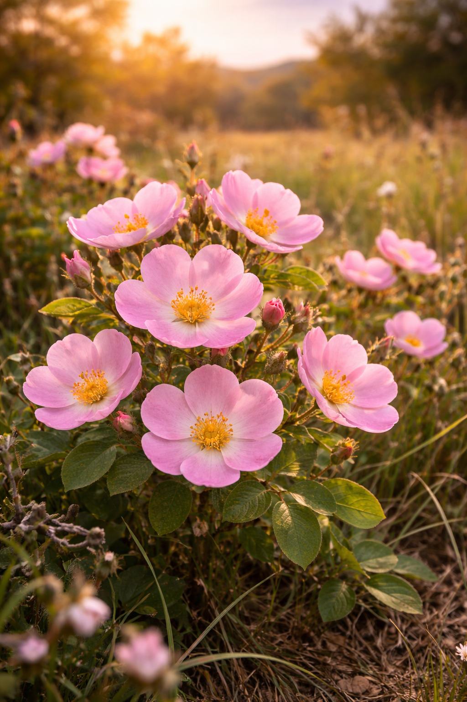

The Story of the Wild Prairie Rose
Wild Prairie Rose has become part of North Dakota landscape identity. This section works as evergreen editorial content while also supporting contextual sponsorships and native placements.
Use this page as a flexible template for content, affiliate ad modules, lead generation, and native product placement around one state flower topic.
The Wild Prairie Rose is one of the most recognized wildflowers in North Dakota, valued for seasonal color, pollinator support, and naturalized habitat restoration.

Wild Prairie Rose has become part of North Dakota landscape identity. This section works as evergreen editorial content while also supporting contextual sponsorships and native placements.
Plan sowing for your local climate window.
Buy SeedsBalance light and moisture by zone.
Plant FoodImprove drainage and texture first.
Garden ToolsStarter supplies in one bundle.
View KitPair Wild Prairie Rose plantings with companion species to support bees, butterflies, and birds through the bloom season.